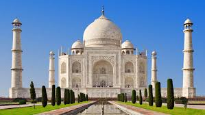
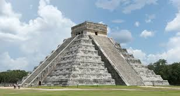
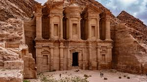
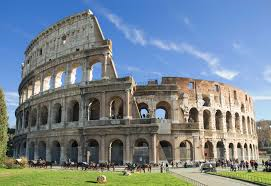

The Wonders of the World
Taj Mahal

Click here to see a 3D Model!
The Taj Mahal is a white marble worked by Mughal ruler Shah Jahan in memory of his third spouse, Mumtaz Mahal.
In Arabic, the Taj Mahal is known as "crown of castles". It is supposed to be the gem of Islamic workmanship in
a country that is transcendently Hindu. As though to show case the field of the Mughal Empire, it consolidates
structures from all the edges of the Empire including Islamic, Persian, Ottoman Turkish and Indian building styles.
The Taj Mahal was worked by an 22,000 workers, painters, stonecutters, weaving specialists; it took them 17 years to complete.
The most recognizable feature is the white dome at the top of the structure; it is referred to as the 'onion dome', it rises
to about 35 meters (115 feet) and is surrounded by four other domes. The materials that were utilized to fabricate Taj Mahal
were moved to the building site by an incredible 1,000 elephants. A significant number of the valuable stones on the sepulcher
were ripped off from the dividers of the catacomb by the British armed force during the Indian revolution of 1857.The
Taj Mahal is a well known Indian landmark and is a tourist magnet, drawing in excess of one million sightseers consistently.
Chichen Itza

Click here to see a 3D Model!
The Maya name "Chichen Itza" means "At the mouth of the well of the Itza." This derives from chi',
meaning "mouth" or "edge", and chʼen or chʼeʼen, meaning "well". Itzá is the name of
an ethnic-lineage group that gained political and economic dominance of the northern peninsula.
One possible translation for Itza is "enchanter (or enchantment) of the water," from its
(itz), "sorcerer", and ha, "water".
The name is spelled Chichén Itzá in Spanish, and the accents are sometimes maintained in other
languages to show that both parts of the name are stressed on their final syllable. Other
references prefer the Maya orthography, Chichʼen Itzaʼ (pronounced [tʃitʃʼen itsáʔ]). This
form preserves the phonemic distinction between chʼ and ch, since the base word chʼeʼen
(which, however, is not stressed in Maya) begins with a postalveolar ejective affricate
consonant. The word "Itzaʼ" has a high tone on the "a" followed by a glottal stop
(indicated by the apostrophe).
History
The Late Classic city was centered upon the area to the southwest of the Xtoloc cenote,
with the main architecture represented by the substructures now underlying the Las Monjas
and Observatorio and the basal platform upon which they were built.
Chichen Itza rose to regional prominence toward the end of the Early Classic period (roughly 600 AD).
It was, however, toward the end of the Late Classic and into the early part of the Terminal Classic
that the site became a major regional capital, centralizing and dominating political, sociocultural,
economic, and ideological life in the northern Maya lowlands. The ascension of Chichen Itza roughly
correlates with the decline and fragmentation of the major centers of the southern Maya lowlands.
As Chichen Itza rose to prominence, the cities of Yaxuna (to the south) and Coba (to the east) were
suffering decline. These two cities had been mutual allies, with Yaxuna dependent upon Coba. At
some point in the 10th century Coba lost a significant portion of its territory, isolating Yaxuna,
and Chichen Itza may have directly contributed to the collapse of both cities.
Petra

Click here to see a 3D Model!
Petra, originally known to its inhabitants in as Raqmu or Raqēmō is a historic and archaeological
city in southern Jordan. Petra lies around Jabal Al-Madbah in a basin surrounded by mountains which
form the eastern flank of the Arabah valley that runs from the Dead Sea to the Gulf of Aqaba. The
area around Petra has been inhabited from as early as 7000 BC, and the Nabataeans might have
settled in what would become the capital city of their kingdom, as early as the 4th century BC.
However, archaeological work has only discovered evidence of Nabataean presence dating back to the
second century BC, by which time Petra had become their capital. The Nabataeans were nomadic Arabs
who invested in Petra's proximity to the trade routes by establishing it as a major regional trading
hub. The trading business gained the Nabataeans considerable revenue and Petra became the focus of
their wealth. The Nabataeans were accustomed to living in the barren deserts, unlike their enemies,
and were able to repel attacks by taking advantage of the area's mountainous terrain. They were
particularly skillful in harvesting rainwater, agriculture and stone carving. Petra flourished in
the 1st century AD, when its famous Al-Khazneh structure – believed to be the mausoleum of Nabataean
king Aretas IV – was constructed, and its population peaked at an estimated 20,000 inhabitants.
Although the Nabataean kingdom became a client state of the Roman Empire in the first century BC,
it was only in 106 AD that it lost its independence. Petra fell to the Romans, who annexed Nabataea
and renamed it as Arabia Petraea. Petra's importance declined as sea trade routes emerged, and
after an earthquake in 363 destroyed many structures. In the Byzantine era several Christian churches
were built, but the city continued to decline, and by the early Islamic era it was abandoned except
for a handful of nomads. It remained unknown to the West until it was rediscovered in 1812 by Johann
Ludwig Burckhardt. Access to the city is through a 1.2-kilometre-long (0.75 mi) gorge called the Siq,
which leads directly to the Khazneh. Famous for its rock-cut architecture and water conduit system,
Petra is also called the "Rose City" because of the colour of the stone from which it is carved. It
has been a UNESCO World Heritage Site since 1985. UNESCO has described Petra as "one of the most precious
cultural properties of man's cultural heritage". In 2007, Al-Khazneh was voted one of the New 7 Wonders
of the World. Petra is a symbol of Jordan, as well as Jordan's most-visited tourist attraction. Tourist
numbers peaked at 918,000 in 2010, but there followed a temporary slump during the political instability
generated by the Arab Spring, which affected countries surrounding Jordan.
The Coloseum

Click here to see a 3D Model!
Name Origins
Originally, the building's Latin name was simply the Latin: amphitheatrum, lit. 'amphitheatre'.
Though the modern name Flavian Amphitheatre (Latin: amphitheatrum Flavium) is often used, there
is no evidence it was used in Classical Antiquity. This name refers to the patronage of the
Flavian dynasty, during whose reigns the building was constructed, but the structure is better
known as the Colosseum. In antiquity, Romans may have referred to the Colosseum by the
unofficial name Amphitheatrum Caesareum (with Caesareum an adjective pertaining to the title Caesar),
but this name may have been strictly poetic as it was not exclusive to the Colosseum;
Vespasian and Titus, builders of the Colosseum, also constructed an Flavian Amphitheatre in
Puteoli (modern Pozzuoli).
The name colosseum for the amphitheatre is attested from the 6th century,
during Late Antiquity. The name Colosseum is believed to be derived from a colossal statue of
Nero on the model of the Colossus of Rhodes. The giant bronze sculpture of Nero as a solar
deity was moved to its position beside the amphitheatre by the emperor Hadrian.
The word colosseum is a neuter Latin noun formed from the adjective colosseus, meaning
"gigantic" or "colossean". By the year 1000 the Latin name "Colosseum" had been coined
to refer to the amphitheatre from the nearby "Colossus Solis".
History and Creation
The site chosen was a flat area on the floor of a low valley between the Caelian,
Esquiline and Palatine Hills, through which a canalised stream ran as well as an
artificial lake/marsh. By the 2nd century BC the area was densely inhabited.
It was devastated by the Great Fire of Rome in 64 AD, following which Nero seized
much of the area to add to his personal domain. He built the grandiose Domus
Aurea on the site, in front of which he created an artificial lake surrounded
by pavilions, gardens and porticoes. The existing Aqua Claudia aqueduct was
extended to supply water to the area and the gigantic bronze Colossus of
Nero was set up nearby at the entrance to the Domus Aurea.
Although the Colossus was preserved, much of the Domus Aurea was torn down.
The lake was filled in and the land reused as the location for the new
Flavian Amphitheatre. Gladiatorial schools and other support buildings
were constructed nearby within the former grounds of the Domus Aurea.
Vespasian's decision to build the Colosseum on the site of Nero's lake
can be seen as a populist gesture of returning to the people an area
of the city which Nero had appropriated for his own use. In contrast
to many other amphitheatres, which were on the outskirts of a city,
the Colosseum was constructed in the city centre, in effect, placing
it both symbolically and precisely at the heart of Rome.
Christ the Redeemer
 Click here to see a 3D Model!
Click here to see a 3D Model!
Quick Facts
Christ the Redeemer is an Art Deco statue of Jesus Christ in Rio De Janeiro, Brazil,
created by Polish-French sculptor Paul Landowski and built by Brazilian engineer
Heitor da Silva Costa, in collaboration with French engineer Albert Caquot. Romanian
sculptor Gheorghe Leonida fashioned the face. Constructed between 1922 and 1931,
the statue is 30 metres (98 ft) high, excluding its 8-metre (26 ft) pedestal.
The arms stretch 28 metres (92 ft) wide. The statue weighs 635 metric tons
(625 long, 700 short tons), and is located at the peak of the 700-metre (2,300 ft)
Corcovado mountain in the Tijuca Forest National Park overlooking the city of Rio
de Janeiro. A symbol of Christianity across the world, the statue has also become
a cultural icon of both Rio de Janeiro and Brazil, and is listed as one of the
New Seven Wonders of the World. It is made of reinforced concrete and soapstone
History
Vincentian priest Pedro Maria Boss first suggested placing a Christian monument
on Mount Corcovado in the mid 1850s to honor Princess Isabel, regent of Brazil
and the daughter of Emperor Pedro II, but the project was not approved. In 1889,
the country became a republic, and due to the separation of church and state,
the proposed statue was dismissed.
The Catholic Circle of Rio made a second proposal for a landmark statue on
the mountain in 1920. The group organized an event called Semana do Monumento
("Monument Week") to attract donations and collect signatures to support the
building of the statue. The organization was motivated by what they perceived
as 'Godlessness' in the society. The donations came mostly from Brazilian
Catholics. The designs considered for the "Statue of the Christ" included
a representation of the Christian cross, a statue of Jesus with a globe
in his hands, and a pedestal symbolizing the world. The statue of Christ
the Redeemer with open arms, a symbol of peace, was chosen. Local engineer
Heitor da Silva Costa designed the statue. French sculptor Paul Landowski
created the work. In 1922, Landowski commissioned fellow Parisian Romanian
sculptor Gheorghe Leonida, who studied sculpture at the Fine Arts Conservatory
in Bucharest and in Italy. A group of engineers and technicians studied Landowski's
submissions and felt building the structure of reinforced concrete (designed by Albert Caquot)
instead of steel was more suitable for the cross-shaped statue. The concrete
making up the base was supplied from Limhamn, Sweden. The outer layers
are soapstone, chosen for its enduring qualities and ease of use. Construction
took nine years, from 1922 to 1931 and cost the equivalent of US$250,000
(equivalent to $3,600,000 in 2019) and the monument opened on October 12,
1931. During the opening ceremony, the statue was to be lit by a battery of
floodlights turned on remotely by Italian shortwave radio inventor Guglielmo Marconi,
stationed 9,200 kilometres (5,700 mi) away in Rome but because of bad weather, the
lights were activated on-site.